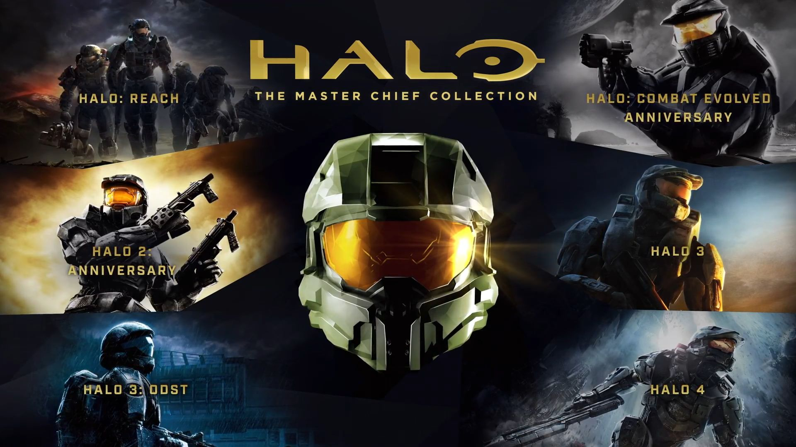
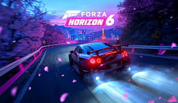
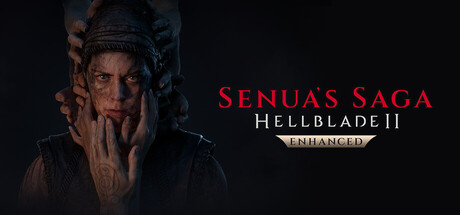
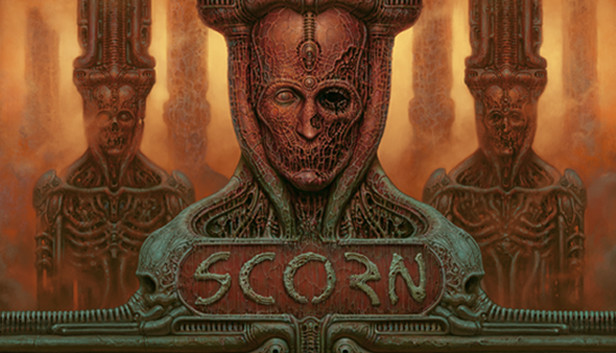
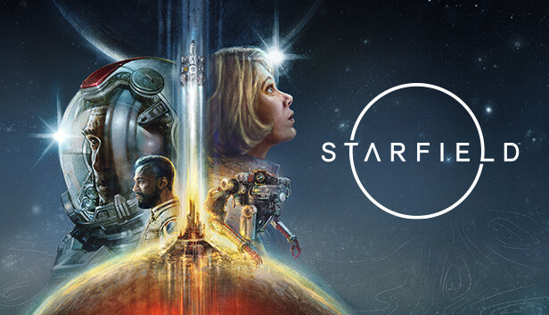

Top 5 recomendaciones de juegos Xbox
Xbox es el intento de Microsoft por competir contra la PlayStation. Si bien no tiene exclusivos tan potentes como la consola de Sony, son de una calidad considerable.
Halo: Master Chief Collection
Shooter / AccionMejorada, renovada y más increíble que nunca... La historia completa del Jefe Maestro se ha optimizado para Xbox Series
X|S. Disfruta de funciones de última generación, como tiempos de carga más rápidos, retrocompatibilidad, campo de visión
personalizable, experiencia de pantalla dividida mejorada y una resolución de hasta 4K a 120 FPS.*
Para celebrar al icónico héroe y su épico viaje, toda la historia del Jefe Maestro se reúne en la colección Jefe Maestro.
Halo: Combat Evolved Anniversary, Halo 2: Anniversary, Halo 3 y Halo 4, y ahora Halo: Reach y Halo 3: ODST, se incluyen en
una única experiencia integrada.
Valoracion: ★★★★☆

Forza Horizon 6
ConduccionDescubre los asombrosos paisajes de Japón con más de 550 coches reales y conviértete en una leyenda del
automovilismo en el Festival Horizon. Comienza tu viaje como turista y explora un mundo lleno de la mejor
música y cultura japonesa. Construye una propiedad en el valle, obtén increíbles casas y exhibe tu preciada
colección de coches en garajes personalizables. Recorre las carreteras con tus amigos, únete a concentraciones
de coches por todo Japón, da rienda suelta a tu imaginación con EventLab y construid juntos en Horizon CoLab.
Valoracion: ★★★★☆

Senua’s Saga: Hellblade II
Accion / TerrorLa secuela del galardonado juego Hellblade: Senua’s Sacrifice, vuelve Senua en un brutal viaje de supervivencia
a través de los mitos y el tormento de la Islandia de los vikingos. Decidida a salvar a las víctimas de los
horrores de la tiranía, Senua se enfrenta a una batalla para superar la oscuridad tanto interior como exterior.
Nueva actualización para 2025: ahora mejorada con nuevas funcionalidades que ofrecen nuevas formas de experimentar
esta historia de supervivencia ganadora de premios y aclamada por el público.
Valoracion: ★★★★☆

Scorn
Puzles / TerrorScorn es un juego evocador de aventuras de miedo en primera persona con un ambiente propio de un universo
tenebroso plagado de formas extrañas y una complejidad lúgubre.
Está diseñado en base a la idea de "aparecer en el mundo". A solas y sin rumbo, explorarás las distintas regiones
conectadas entre sí de forma no lineal. El propio entorno tan perturbador es un personaje en sí.
Valoracion: ★★★★☆

Starfield
RPG / Ciencia FiccionStarfield es el primer universo nuevo en más de 25 años de Bethesda Game Studios, los galardonados creadores de
The Elder Scrolls V: Skyrim y Fallout 4. En este juego de rol de próxima generación ambientado entre las estrellas,
podrás hacerte el personaje que desees y explorar con una libertad sin precedentes mientras te embarcas en un viaje
épico para desentrañar el mayor misterio de la humanidad.
Valoracion: ★★★★☆

Resumen de juegos
| Juego | Género | Jugadores | Valoracion |
|---|---|---|---|
| Halo: Master Chief Collection | Shooter / Accion | 1 - 4 | ★★★★☆ |
| Forza Horizon 6 | Conduccion | 1 | ★★★★☆ |
| Senua’s Saga: Hellblade II | Accion / Terror | 1 | ★★★★☆ |
| Scorn | Puzles / Terror | 1 | ★★★★☆ |
| Starfield | RPG / Ciencia Ficcion | 1 | ★★★★☆ |
| Todos los juegos están disponibles en la Microsoft Store | |||